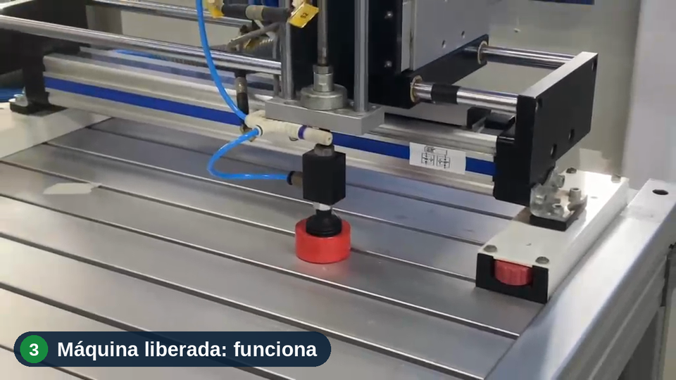

A câmera observa
A imagem do posto de trabalho é capturada para conferir os equipamentos de proteção definidos para aquela atividade.
CAPTURA DA IMAGEMA proteção de quem trabalha vem antes de a máquina ligar.
O LockSafe combina inteligência artificial e controle eletrônico para verificar o uso de EPI e condicionar o acionamento da máquina à proteção do operador.

01 / POR QUE EXISTIMOS
Quem garante que uma máquina não seja acionada quando o operador está sem o equipamento de proteção?
O LockSafe nasceu desse questionamento. Um EPI pode ser esquecido, retirado durante a atividade ou ter sua ausência percebida tarde demais.
A equipe do SENAI Americana transformou o desafio em um protótipo: conectar a verificação do EPI ao comando da máquina, levando a orientação de segurança para dentro do processo.
Conheça quem está por trásDe cartaz na parede a regra que a máquina cumpre sozinha.
02 / COMO FUNCIONA
Três etapas conectam a presença do EPI ao acionamento da máquina no protótipo.
A imagem do posto de trabalho é capturada para conferir os equipamentos de proteção definidos para aquela atividade.
CAPTURA DA IMAGEMO agente analisa a imagem conforme os critérios configurados para o posto e envia a decisão ao sistema de controle.
ANÁLISE DO AGENTEA placa EPI Control, com ESP32 e relés, libera ou bloqueia o acionamento. A retirada do EPI gera uma nova condição de bloqueio.
INTERTRAVAMENTOCada posto tem suas necessidades. A proposta permite configurar os EPIs que o agente deve reconhecer, mantendo a mesma placa de controle.
03 / DA IDEIA À BANCADA
Veja os testes apresentados no pitch do projeto. Escolha uma condição para assistir à demonstração real.
Teste em bancada · Condição sem EPI: acionamento bloqueado.
Estágio atual: protótipo testado em bancada. A aplicação industrial faz parte das próximas etapas de desenvolvimento e validação.
04 / PARA QUEM CRIAMOS
Uma proposta voltada a pequenas e médias indústrias e a ambientes de ensino técnico.
Foco inicial em empresas metalúrgicas e têxteis da região de Americana e Campinas.
Ambientes de aprendizagem para desenvolver, testar e demonstrar a integração entre IA e automação.
05 / QUEM FAZ ACONTECER
Aprendizado, tecnologia e vontade de resolver um problema real da indústria.

06 / PRÓXIMOS PASSOS
Nosso caminho de desenvolvimento, conforme o planejamento apresentado no pitch.
Integração da visão computacional com a placa de controle.
Avaliar acertos e falsos bloqueios em condições de uso.
Aprimorar o hardware e o modelo, iniciar as primeiras implantações.
ANTES DE CONVERSARMOS
O projeto está na fase de protótipo testado em bancada. A equipe busca parceiros para avançar nos pilotos, na validação e na evolução para aplicações industriais.
A proposta é configurar o agente conforme os EPIs necessários em cada posto. Os critérios de detecção e os resultados precisam ser avaliados para cada aplicação durante os testes.
O LockSafe é proposto como uma camada complementar. A integração deve considerar os dispositivos de segurança existentes e a avaliação técnica específica de cada máquina.
Buscamos indústrias interessadas em colaborar com pilotos, mentoria técnica e comercial, além de parceiros para apoiar o desenvolvimento e a entrada no mercado.
VAMOS CONSTRUIR O PRÓXIMO PASSO
Tem interesse em um piloto, parceria ou investimento?
Vamos aproximar o LockSafe da sua realidade.
Nossos canais de contato estarão disponíveis em breve.